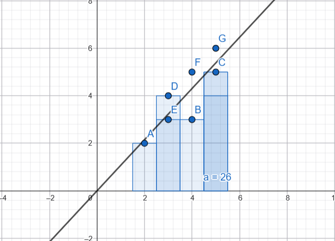

pertemuan 13#
Proyek Analisis Data: Regresi Linier#
Berdasarkan data observasi, kita memiliki 7 titik koordinat \((X, Y)\) yang akan kita gunakan sebagai dataset:
Titik |
Variabel Input (X) |
Variabel Respon (Y) |
|---|---|---|
A |
2 |
2 |
B |
4 |
3 |
C |
5 |
5 |
D |
3 |
4 |
E |
3 |
3 |
F |
4 |
5 |
G |
5 |
6 |
Tujuan: Mencari persamaan regresi linier \(y = b_0 + b_1x\), di mana \(b_0\) adalah intercept dan \(b_1\) adalah koefisien regresi. Kita akan menyelesaikannya dengan dua cara: perhitungan analitik menggunakan matriks dan menggunakan library scikit-learn pada Python.
Visualisasi Data (GeoGebra)#
Berikut adalah tampilan sebaran titik data dan garis regresi yang terbentuk menggunakan perangkat lunak GeoGebra:

(Gambar: Sebaran titik data A-G dan visualisasi garis regresi linier yang melewati titik awal sumbu)
1. Perhitungan Secara Analitik#
Untuk mengestimasi koefisien model linier, kita harus menemukan garis yang meminimalkan jumlah kuadrat sisa (sum of squared residuals). Menggunakan pendekatan matematika matriks, rumus analitik untuk mencari koefisien regresi adalah:
Pertama, kita susun data ke dalam matriks \(X\) dan vektor \(Y\). Kita harus menambahkan kolom “Dummy” yang berisi angka 1 pada matriks prediktor \(X\) sebagai placeholder untuk menghitung \(b_0\).
Langkah 1: Menghitung \(X^T X\) (Perkalian matriks transpos dengan matriks aslinya).
Langkah 2: Menghitung Invers dari matriks \((X^T X)^{-1}\)
Determinan = \((7 \times 104) - (26 \times 26) = 728 - 676 = 52\)
Langkah 3: Menghitung \(X^T Y\)
Langkah 4: Menghitung koefisien \(\beta\)
Kesimpulan Analitik:
\(b_0\) (Intercept) = 0
\(b_1\) (Koefisien) = \(56/52\) atau 1.0769
Persamaan regresi liniernya: \(y = 0 + 1.0769x\)
2. Program Python Menggunakan scikit-learn#
Berikut adalah implementasi menggunakan Python (via Google Colab).
Kode Python dan Penjelasannya#
# 1. Mengimpor library yang dibutuhkan
import numpy as np
from sklearn.linear_model import LinearRegression
Penjelasan: * import numpy as np: Memanggil pustaka NumPy yang digunakan untuk membuat dan memanipulasi struktur data berupa array atau matriks. Kita menyingkatnya sebagai np.
from sklearn.linear_model import LinearRegression: Mengambil fungsi khususLinearRegressiondari pustakascikit-learn(sklearn), yang berisi algoritma untuk melakukan perhitungan regresi linier secara otomatis.
# 2. Mendefinisikan variabel prediktor (X)
X = np.array([2, 4, 5, 3, 3, 4, 5]).reshape(-1, 1)
Penjelasan: Membuat array NumPy yang berisi data input (sumbu X). Perintah .reshape(-1, 1) sangat penting di sini. Scikit-learn mensyaratkan data fitur (X) harus berupa matriks 2 Dimensi (kolom dan baris). Perintah ini mengubah array 1 dimensi menjadi matriks 2 dimensi dengan 1 kolom (kolom tunggal).
# 3. Mendefinisikan variabel respon (y)
y = np.array([2, 3, 5, 4, 3, 5, 6])
Penjelasan: Membuat array untuk data target atau output (sumbu Y). Untuk variabel target (y), scikit-learn menerima format array 1 dimensi, sehingga kita tidak perlu menggunakan reshape.
# 4. Membuat model dan melatihnya
model = LinearRegression()
model.fit(X, y)
Penjelasan: * model = LinearRegression(): Kita menginisialisasi atau membuat sebuah “cetakan” model regresi linier kosong dan menyimpannya di dalam variabel bernama model.
model.fit(X, y): Ini adalah proses training (pelatihan). Komputer secara otomatis menjalankan kalkulasi (seperti hitungan matriks analitik di atas) untuk mencari garis lurus yang paling pas (best-fit line) berdasarkan dataXdany.
# 5. Mengambil dan menampilkan hasil
b0 = model.intercept_
b1 = model.coef_[0]
print("Hasil Regresi Linier menggunakan scikit-learn:")
print(f"Intercept (b0) = {b0:.4f}")
print(f"Koefisien (b1) = {b1:.4f}")
print(f"Persamaan Garis: y = {b0:.4f} + {b1:.4f}x")
Penjelasan: * model.intercept_: Mengambil nilai titik potong sumbu y (\(b_0\)) yang dihasilkan dari proses fit.
model.coef_[0]: Mengambil nilai kemiringan/koefisien (\(b_1\)). Karenacoef_mengembalikan bentuk array, kita menambahkan[0]untuk mengambil nilai angka pertamanya.Fungsi
print(...)digunakan untuk mencetak hasil ke layar.:.4fadalah format untuk membatasi angka desimal hanya sampai 4 angka di belakang koma agar rapi.
Hasil Output (Google Colab)#
Ketika kode di atas dijalankan, output yang dihasilkan adalah:
Hasil Regresi Linier menggunakan scikit-learn:
Intercept (b0) = -0.0000
Koefisien (b1) = 1.0769
Persamaan Garis: y = -0.0000 + 1.0769x
(Catatan: Nilai -0.0000 pada intercept pada dasarnya sama dengan 0. Tanda minus muncul sebagai akibat dari pembulatan komputasi floating-point di dalam memori komputer pada library Python, namun secara matematis nilainya identik dengan perhitungan analitik matriks kita).